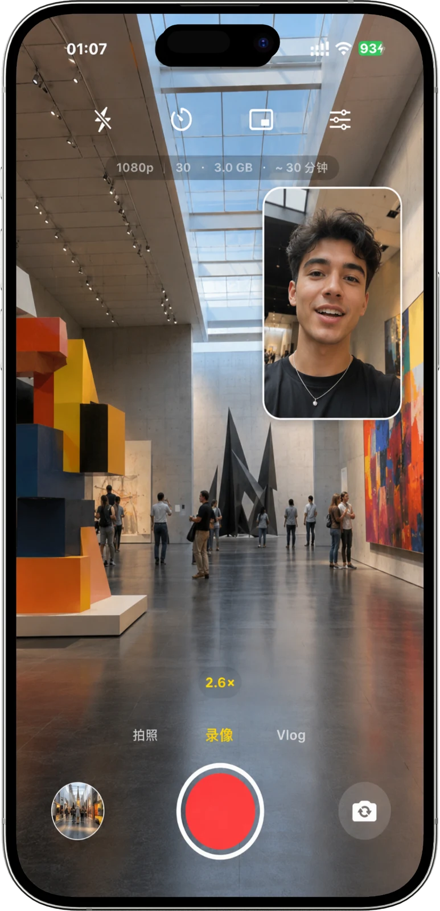
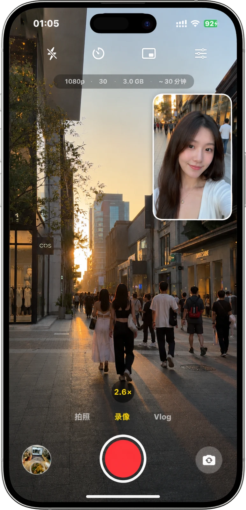
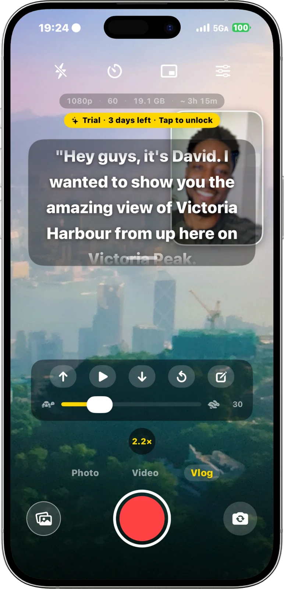
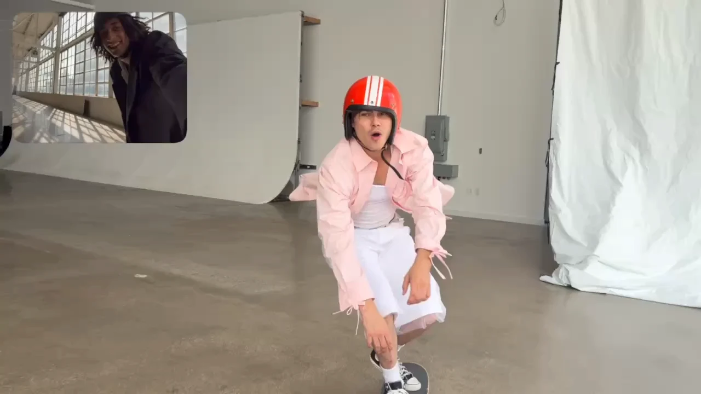

TWO CAMERAS. ONE MOMENT.
眼前与自己，
一起入镜。
前后摄像头同步记录，支持照片与视频。画中画、上下或左右布局，让画面按你的想法呈现。
照片 / 视频 / 多种布局

为不同的故事，找到视角
切换一种方式，留住另一面精彩。
TWO CAMERAS. ONE MOMENT.
前后摄像头同步记录，支持照片与视频。画中画、上下或左右布局，让画面按你的想法呈现。
照片 / 视频 / 多种布局YOUR SCREEN. YOUR REACTION.
用悬浮小窗呈现前置或后置摄像头画面，与屏幕内容一同记录。还可保存独立的相机原片。
屏幕录制 / 相机小窗录屏双拍需 iOS 27 或更新版本；跨 App 相机表现、悬浮窗位置与尺寸受设备和系统控制。
STAY IN YOUR STORY.
把想说的话放进提词器，调节滚动速度，保存常用脚本。少一点忘词，多一点专注。
滚动提词 / 脚本保存
动画，跟着你的手指走
从镜头里的瞬间，到设计背后的细节。
左右拖动，亲手展开。

在画面上左右拖动，或用下方进度条控制动画。支持鼠标、触屏和键盘方向键。查看原始演示 ↗
下一段故事，从这里开始
把同框放进口袋，记录属于你的两个视角。
App 需要 iOS 16 或更新版本。前后摄像头同时拍摄还需要设备支持多摄像头功能，具体能力以 App 在设备上的检测结果为准。
录屏双拍需要 iOS 27 或更新版本，并使用系统屏幕录制和画中画能力。跨 App 相机能否持续工作取决于设备、系统状态及权限；系统中断时可能暂停。小窗可调整的尺寸与位置由 iOS 控制。
安卓版仍在开发，当前没有可下载的 APK。是否能通过网页安装，取决于设备系统是否支持 Android APK；原生鸿蒙应用需要单独适配。支持范围会随安卓版发布一并公布。
使用同框无需注册账号。照片与视频保存在本地，分享由你决定。Pro 提供月度、年度与永久购买选项，具体价格与功能以 App 内及 App Store 显示为准。